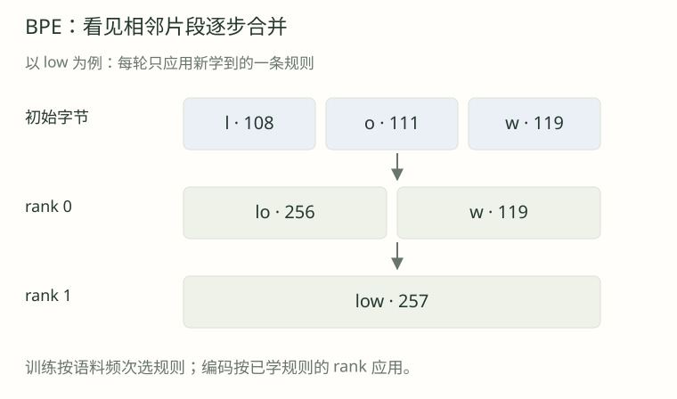

01 · 为什么第一轮不是 o+w？
在主语料中，l+o 与 o+w 分别出现几次？为什么选择 l+o？如果另一实现先合并 o+w，就一定写错了吗？
展开逐步解析
两者都来自 low×5 与 lower×2，所以各 7 次。本课按整数对升序，(108,111) 小于 (111,119)，因此选 l+o。另一实现如果明确采用不同的并列决策规则，可能得到另一条合法轨迹；关键是实现、保存的规则与编码行为保持一致，而不是把本课并列选择当成唯一标准。
从字节学习有序合并规则
先修：字符、词表与 UTF-8。
纯字节表示序列偏长。BPE 将高频相邻片段合并为新 token，例如把 l | o 合为 lo。

BPE（Byte Pair Encoding）反复执行：统计相邻对 → 选择最高频对 → 合并 → 重新统计，得到词表和有序规则。
l | o | wlo | wlow后续轮次可以合并多字节片段，例如 lo + w → low；操作单位是当前 token。
这里的“训练”是统计与建立合并规则，不涉及神经网络梯度。
训练：语料 → 规则；编码：文本 + 规则 → IDs；解码：IDs + 词表 → 字节 → 原文。
BPE 根据频次合并，不要求片段具有完整词义，例如 ew 也可以成为 token。
使用下列四条语料；权重表示该记录在统计中出现的次数。
| 训练条目 | 权重 | 初始字节 ID | 加权 token 数 |
|---|---|---|---|
| low | 5 | [108, 111, 119] | 3 × 5 = 15 |
| lower | 2 | [108, 111, 119, 101, 114] | 5 × 2 = 10 |
| new | 4 | [110, 101, 119] | 3 × 4 = 12 |
| newer | 1 | [110, 101, 119, 101, 114] | 5 × 1 = 5 |
四种文本总权重为 12，初始加权 token 总量为 42。
新 ID = 256 + rank，但两者含义不同，不能把这个算式当作所有 tokenizer 的约定。本课每条记录是一段，不跨记录合并。真实 tokenizer 的预分词边界见下一课。
lower×2 和 low×5 分别为 (l,o) 贡献 2 与 5 次，总频次是 7。
| 相邻对 | ID 对 | 贡献来源 | 总频次 |
|---|---|---|---|
| l + o | (108, 111) | low×5 + lower×2 | 7 |
| o + w | (111, 119) | low×5 + lower×2 | 7 |
| e + w | (101, 119) | new×4 + newer×1 | 5 |
| n + e | (110, 101) | new×4 + newer×1 | 5 |
| e + r | (101, 114) | lower×2 + newer×1 | 3 |
| w + e | (119, 101) | lower×2 + newer×1 | 3 |
l+o 与 o+w 并列 7 次；按整数 ID 对升序，选 (108,111)，分配新 ID 256。
规则 rank 0：(108, 111) → 256，词表[256] = 字节 b"lo"
low × 5：l | o | w → lo | w
lower × 2：l | o | w | e | r → lo | w | e | r
new × 4：n | e | w → n | e | w
newer × 1：n | e | w | e | r → n | e | w | e | r本轮共减少 7 个加权位置：42→35；词表新增一项，变为 257 项。
合并后重计数：lo+w 在两条记录中共出现 7 次，成为下一轮选择。
规则 rank 1：(256, 119) → 257，词表[257] = 字节 b"low"
low × 5：lo | w → low
lower × 2：lo | w | e | r → low | e | r
new × 4：n | e | w → n | e | w
newer × 1：n | e | w | e | r → n | e | w | e | r第二轮将 lo+w 合成 ID 257，总量从 35 降为 28。
接着 e+w 与 n+e 均为 5 次，按 ID 对选前者；随后合并 n+ew。
| 轮次 | rank | 合并对 | 新 ID / 片段 | 频次 | 加权总量 |
|---|---|---|---|---|---|
| 初始 | — | — | 0～255 | — | 42 |
| 1 | 0 | l + o | 256 / lo | 7 | 35 |
| 2 | 1 | lo + w | 257 / low | 7 | 28 |
| 3 | 2 | e + w | 258 / ew | 5 | 23 |
| 4 | 3 | n + ew | 259 / new | 5 | 18 |
| 5 | 4 | e + r | 260 / er | 3 | 15 |
| 6 | 5 | low + er | 261 / lower | 2 | 13 |
| 7 | 6 | new + er | 262 / newer | 1 | 12 |
七轮后各条记录只剩一个 token，总量为 12；无段内相邻对，训练停止。词表大小为 263。
训练两轮后，lower 仍是 low | e | r。
记录保存当前 IDs 与权重；zip(ids, ids[1:]) 枚举相邻位置，计数乘记录权重。
from collections import Counter
def pair_counts(corpus):
counts = Counter()
for row in corpus:
ids = row["ids"]
for pair in zip(ids, ids[1:]):
counts[pair] += row["weight"]
return counts按“频次降序、ID 对升序”确定下一条规则。
对 a a a 合并 (a,a) 时，必须左到右非重叠替换，得到 aa | a。
def merge_pair(ids, pair, new_id):
out, i = [], 0
while i < len(ids):
if i + 1 < len(ids) and (ids[i], ids[i + 1]) == tuple(pair):
out.append(new_id)
i += 2 # 两个输入位置一起消费
else:
out.append(ids[i])
i += 1
return out合并函数返回新列表，避免遍历时修改原列表。
aaa 有两次相邻匹配，却只能替换一次：频次不总等于实际节省量。
vocab = [bytes([i]) for i in range(256)]
merges = []
for rank in range(max_merges):
counts = pair_counts(corpus)
if not counts:
break
pair = min(counts, key=lambda p: (-counts[p], p))
new_id = len(vocab)
vocab.append(vocab[pair[0]] + vocab[pair[1]])
merges.append({"pair": list(pair), "id": new_id, "rank": rank})
corpus = [dict(row, ids=merge_pair(row["ids"], pair, new_id))
for row in corpus]min 的排序键是 (-频次, pair)；完整可运行实现见本节实验。
新词表条目保存两个旧条目字节串的拼接。
最多合并 M 次，词表至多有 256+M 项；没有候选对时提前结束。
全扫描版本便于理解；更大语料上的优化见“BPE 训练工程化”。
编码先把新文本转成 UTF-8 字节，再反复应用当前可用的最小 rank 规则。
编码复用既有规则，不根据新输入的频次重新训练或扩表。
使用全部规则编码训练中未出现的 lowest：
初始： l | o | w | e | s | t
ID： 108 111 119 101 115 116
rank 0：l + o → lo
[256, 119, 101, 115, 116]
rank 1：lo + w → low
[257, 101, 115, 116]
结果： low | e | s | t
当前没有 e+s、s+t 等合并规则，停止。结果为 low | e | s | t，说明词表无需收录整个单词也能表示新输入。
| 输入 lower | 可用规则 | 编码结果 |
|---|---|---|
| 未训练 | 0 条 | l | o | w | e | r |
| 训练 2 轮 | rank 0～1 | low | e | r |
| 训练 5 轮 | rank 0～4 | low | er |
| 训练 6 轮 | rank 0～5 | lower |
不同训练阶段可用规则不同，切分也会变化：
另取规则表：先合并 b+c，再合并 a+b，最后合并 bc+d。
rank 0：b + c → bc （ID 256）
rank 1：a + b → ab （ID 257）
rank 2：bc + d → bcd （ID 258）编码 abcd 应先应用 rank 0，得到 a|bc|d，再成为 a|bcd，IDs 为 [97,258]。最长前缀匹配则会得到不同的 ab|c|d。
因此编码必须遵守合并优先级，不能只看词表有哪些片段。
def encode(text, rules):
ids = list(text.encode("utf-8"))
by_pair = {tuple(rule["pair"]): rule for rule in rules}
while len(ids) >= 2:
available = [by_pair[p] for p in zip(ids, ids[1:]) if p in by_pair]
if not available:
break
rule = min(available, key=lambda r: r["rank"])
ids = merge_pair(ids, rule["pair"], rule["id"])
return ids此实现会重复扫描输入，重点在展示 rank 的行为。
[257,101,115,116] 查词表得到 b"low"、e、s、t，拼接后解码为 lowest。
def decode(ids, vocab):
payload = b"".join(vocab[token] for token in ids)
return payload.decode("utf-8")单 token 字节可能不是完整 UTF-8 字符，应拼接后统一解码。
基础词表含全部 256 个字节，所以未见过的“中”仍可表示为 [228,184,173]。
合法 Unicode 文本可无损往返；孤立代理项在浏览器中会被替换，Python 严格模式会报错。
先预测下一对，再点“合并一轮”；支持回退与重置。
竖线仅标示 token 边界，不属于原文。
候选已按加权频次和 ID 对排序，替换采用左到右非重叠方式。
本实验使用自定义规则，输入与计算均在本地完成。
先给出数值或切分结果，再说理由。尤其不要把词表条目数、语料中的 token 数和规则条数混成一个概念。
在主语料中，l+o 与 o+w 分别出现几次？为什么选择 l+o？如果另一实现先合并 o+w，就一定写错了吗？
两者都来自 low×5 与 lower×2，所以各 7 次。本课按整数对升序，(108,111) 小于 (111,119)，因此选 l+o。另一实现如果明确采用不同的并列决策规则，可能得到另一条合法轨迹；关键是实现、保存的规则与编码行为保持一致，而不是把本课并列选择当成唯一标准。
完成前两轮后，已学几条规则、词表有几个条目、加权 token 总量是多少？为什么词表增加而序列缩短？
两条规则，新 ID 为 256 和 257；基础 256 项仍保留，所以词表共 258 项。加权总量为 42−7−7=28。词表描述“可以使用哪些单位”，序列描述“这次用了多少单位”，扩充可用的大单位可以减少序列长度，两者没有矛盾。
只有一条权重为 2 的 aaa。相邻对 (a,a) 的加权频次是多少？执行一次非重叠替换后，语料加权 token 总量从多少降到多少？
单份 aaa 有两个相邻位置匹配，所以频次为 2×2=4。每份只能从左侧合并一次，得到 aa|a，单份长度从 3 到 2。加权总量从 3×2=6 降到 2×2=4，只减少 2，而不是统计频次 4。
完成主语料的六轮训练后，写出 lowest 的最终 ID 序列，并列出实际应用了哪些 rank。它为什么不使用 lower 对应的 ID 261？
先用 rank 0 把 l+o 变成 256，再用 rank 1 把 lo+w 变成 257；剩下 e、s、t 没有可用合并，得到 [257,101,115,116]。lower 的字节是 l o w e r，而输入结尾是 e s t，没有 er，因此不能合成 lower。不能因为两词“看着相似”就替换成词表里的完整词。
使用正文另一套规则：先 b+c，再 a+b，再 bc+d。对 abcd，为什么最终是 a|bcd，而不是 ab|c|d？
初始 a|b|c|d 同时存在可用的 b+c 与 a+b；前者 rank 0 优先于 rank 1，先得到 a|bc|d。此时 a+b 已不相邻且 b 不再独立，于是应用 rank 2，得到 a|bcd。词表里存在 ab，并不表示必须从最左侧优先取它。
主语料没见过“中”。完成七轮训练后，用本课 tokenizer 编码“中”会得到哪些 ID？能否逐 token 独立按 UTF-8 解码？
UTF-8 是 E4 B8 AD，即 [228,184,173]；规则只涉及英文片段，所以这三个单字节保持不变。单独 E4 是未完成的三字节序列，严格解码会报错。将三个 token 的字节拼起来后才可恢复“中”。基础 256 字节覆盖还在，不需要 UNK。
语料只有独立样本 a×1、b×1、c×1。按本课约定能学习 a+b 吗？如果训练预算是 100 轮，词表一定会到 356 项吗？
不能跨样本边界统计，每段只有一个字节，没有段内相邻对。训练立即停止，仍是 256 个基础条目。合并预算是上限，不是保证实际学习到的条数；是否有可合并对也是停止条件。
如果新输入里 st 出现了一千次，编码器会不会当场给 st 分配一个新 ID？如果这样做，语言模型会遇到什么问题？
不会。本课编码只应用训练好的规则，没有 st 规则就保留 s|t。临时扩充词表会产生原模型未配置的编号与向量映射，也破坏可重复的编码约定。需要更新 tokenizer 时，应显式管理词表与模型兼容性，而不是在普通编码过程中重新训练。
在仓库根目录运行。默认会打印全部七轮的 pair、频次、新 ID、片段与加权 token 总量，并编码 lowest：
python3 labs/03-bpe-algorithm/01-byte-bpe.py
python3 labs/03-bpe-algorithm/01-byte-bpe.py --merges 2 --text lower
python3 labs/03-bpe-algorithm/01-byte-bpe.py --merges 6 --text 'A中🙂'
python3 -m unittest discover -s tests -p 'test_bpe*.py'查看完整 Python 实验 · 运行说明与预期输出。实验本身仅用 Python 标准库；跨语言测试另使用工作区现有 Node.js，核对网页内核与 Python 的一致性。